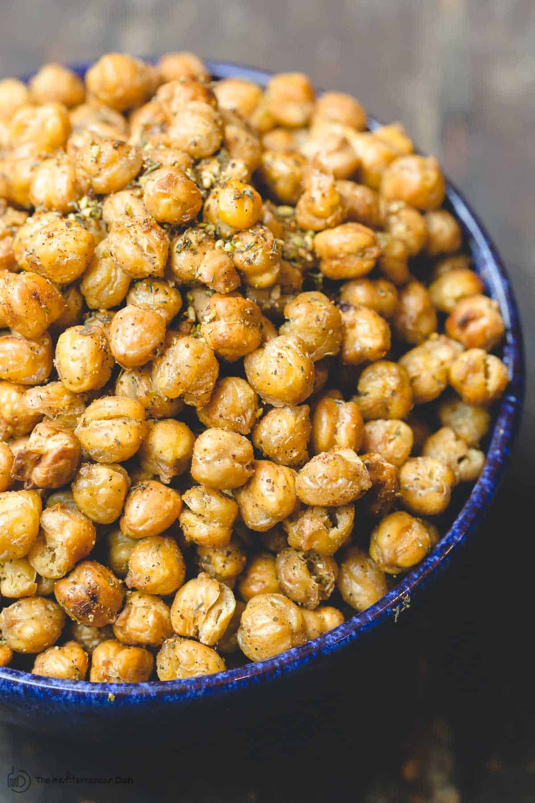

Crispy Roasted Chickpeas

Image and recipe from The Mediterranean Dish.
Description
These chickpeas are a great way to add flavor, protein, and a crunch to salads. Choose seasonings that complement your dish. I often replace the salt with soy sauce before roasting.
Ingredients
- Cooked chickpeas
- Olive Oil
- Salt
- Your choice of seasoning: basil, oregano, rosemary, Old Bay, za'atar, thyme, red pepper, paprika, cumin, coriandar...
Steps
- Preheat the oven to 400 degrees F.
- Use a colandar to dry the chickpeas.
- In a bowl, coat the chickpease with olive oil and sprinkle salt throughout.
- Spread the chickpeas into a single layer on a baking sheet.
- Roast for 20 to 35 minutes, or until the chickpease turn golden brown and crispy to your liking. Shake the sheet pan every 10 minutes or so.
- Season the chickpeas immediately after roasting. Season chickpeas after they come out of the oven, not before!
Back to Homepage